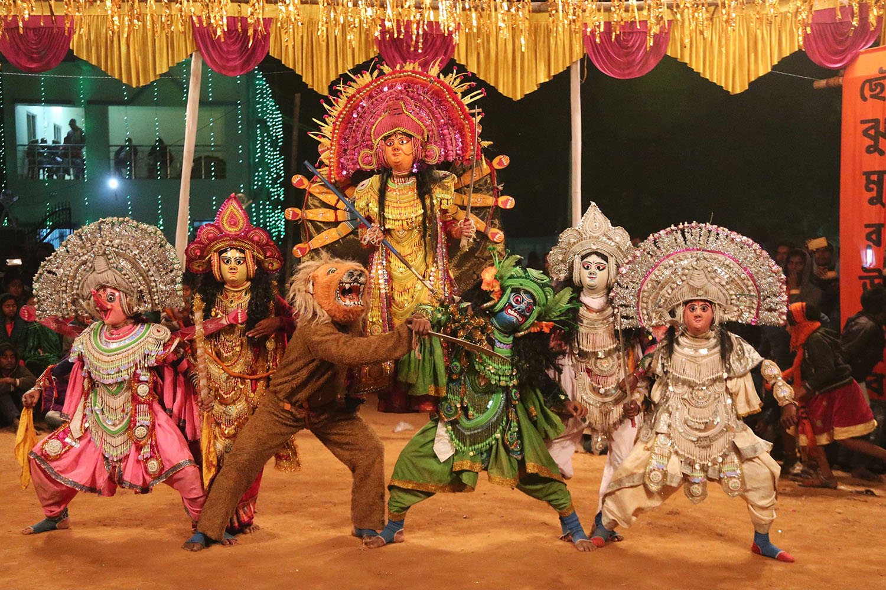

Exploring India's Culture and Heritage
Classical Dance Forms of India
Chhau is a traditional Indian dance form that blends martial arts, tribal traditions, and classical dance. It is practiced in the eastern regions of India, particularly in the states of Jharkhand (Saraikela Chhau), Odisha (Mayurbhanj Chhau), and West Bengal (Purulia Chhau). Among these, the Saraikela Chhau of Jharkhand is known for its elegance and stylized movements. Recognized by UNESCO as an Intangible Cultural Heritage, Chhau dance is a vibrant expression of mythology, folklore, and heroism.
The roots of Chhau dance can be traced back to ancient tribal traditions and martial practices. Originally performed by warriors during festivals and after battles, it gradually evolved into a performance art that combines storytelling with disciplined, athletic movements. The term "Chhau" is believed to have come from the Sanskrit word "Chhaya", meaning shadow or mask, reflecting its traditional use of masks in performance. The royal families of Saraikela and Kharsawan in Jharkhand played a crucial role in refining and popularizing this art form in the 18th and 19th centuries.
Chhau is typically performed during festivals such as Chaitra Parva (spring festival) and religious occasions. The dance is characterized by powerful body movements, leaps, and spins, often mimicking animal movements or scenes from epics like the Ramayana and Mahabharata. In Saraikela and Purulia styles, artists wear intricately crafted masks that represent gods, demons, animals, and mythological characters. The Mayurbhanj style, however, is performed without masks, relying solely on facial expressions and body language.
Chhau is more than a dance—it is a cultural identity for many tribal and non-tribal communities in eastern India. It plays a significant role in community gatherings, festivals, and spiritual events. The dance form bridges folk traditions and classical elements, preserving ancient stories and regional values through a physically demanding yet artistically rich performance style.